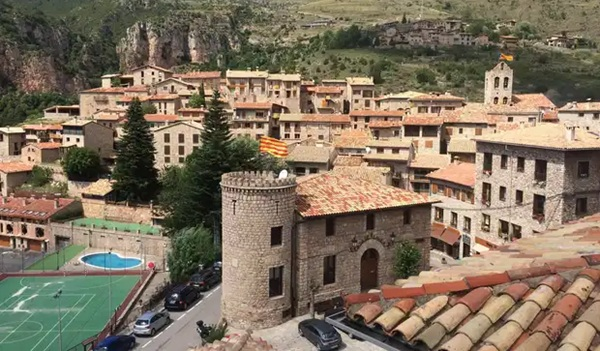

Los pueblos más bonitos
Los pueblos más bonitos

Castellar de n'Huges un pequeño pueblo de la comarca del Berguedà, conocido por ser dónde está el origen del río Lobregat:Las Fonts del Llobregat, en el Se accede tras una larga carretera de curvas. Es un pueblo muy tranquilo, que ha sabido conservar las esencias de pueblo medieval y de montaña, hecho todo de piedra en lo alto de una montaña.
LasFonts del Llobregat quedan a 20 minutos de distancia andando desde el centro del pueblo. Estas fuentes marcan el inicio del río Lobregat, el cual pasa bordeando la ciudad de Barcelona. Las Fonts del Llobregat quedan a 20 minutos de distancia andando desde el centro del pueblo. Estas fuentes marcan el inicio del río Lobregat, el cual pasa bordeando la ciudad de Barcelona.